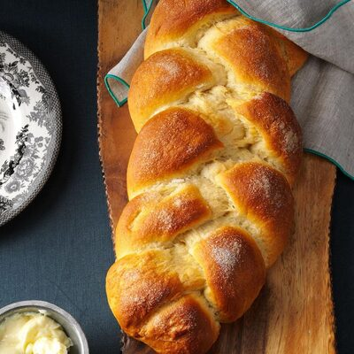

Cardamom Braids

Cardamom Braids
This is an old recipe great for breakfast. The bread is great for dunkin in a cup of coffee
Walter Dust, Rapid City, MI
Ingredients
- 1/4 oz. active dry yeast
- 1 1/2 cups warm milk
- 1 cup sugar
- 3 large egg yolks, lightly beaten
- 1/2 cup butter, softened
- 1 tbsp. ground cardamom
- 1/2 tsp. salt
- 5 to 6 cups all-puporse flour
- 2 tbsp milk
Steps
- In a large bowl, dissolve yeast in 1/2 cup warm milk. Add 3/4 cup sugar, egg yolks, butter, cardamom,
salt, 3 cups of clour, and the remaining warm milk; beat until smooth. Stir in enough of the remaining
flour to form a soft dough
- Turn onto a floured surface; knead until smooth and elastic. Place in a greased bowl, turning once to
grease top. Cover and let rise in a warm place until doubled, about 1 1/4 hours.
- Punch dough down; divide into 6 pieces. Shape each piece into a 16-in. rope. Place 3 ropes
on a greased baking sheetl; braid. Pinch ends firmly and tuck under. Repeat with the remaining 3 ropes
on another baking sheet. Cover and let rise until doubled, about 45 minutes.
- Brush braids with milk and sprinkle with remaining sugar. Bake at 350 degrees until gold brown, 25-30 min.
Rmove to wire racks to cool